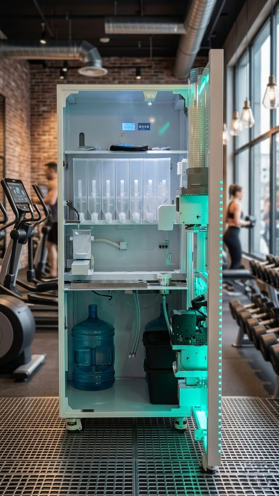

Nutrición Deportiva Automatizada
Una nueva forma de ofrecer suplementación premium dentro de tu espacio.
Shake Machine integra tecnología, conveniencia y nutrición deportiva en un formato listo para gimnasios, centros comerciales y espacios wellness que quieren mejorar la experiencia del usuario y abrir una nueva línea de ingresos.
La Solución
Shake Machine combina nutrición deportiva, tecnología y conveniencia en un solo punto de servicio.
No se trata solo de instalar una máquina. Se trata de ofrecer una experiencia útil para el usuario final y, al mismo tiempo, crear una propuesta moderna para el espacio donde se ubica.
Disponibilidad inmediata
El usuario encuentra suplementación en el momento más relevante: al terminar su entrenamiento o en espacios de alto flujo wellness.
Nueva propuesta comercial
Permite activar una nueva categoría de servicio e ingreso sin convertir la sede en una operación tradicional adicional.
Experiencia premium
Refuerza la percepción de innovación, bienestar y conveniencia en gimnasios, centros comerciales y espacios orientados a salud.

La máquina
Diseñada para integrarse en sitio con una presencia compacta, visible y funcional.
Portafolio adaptable
La oferta puede incluir proteínas, creatinas, vitaminas y otras referencias deportivas según la ubicación y el tipo de cliente.
Atención continua
El formato está pensado para funcionar de manera autónoma durante la jornada del establecimiento, reduciendo carga operativa.
Ubicación estratégica
Funciona especialmente bien en gimnasios, cafeterías fitness, zonas wellness, centros comerciales y espacios con tráfico orientado a salud y rendimiento.
Multiples medios de pago
Funciona con diferentes medios de pago para facilitar la compra y adaptarse a distintos perfiles de usuario.
Eficiente
Los usuarios pueden obtener su producto en menos de un minuto, lo que hace que la experiencia sea rápida y conveniente, ideal para momentos post-entreno o compras en espacios comerciales.
Transformación Del Espacio
Un espacio poco aprovechado puede convertirse en un punto visible, útil y alineado con tu marca.
Una de las fortalezas del modelo es su capacidad para instalarse en espacios existentes y darles una nueva función comercial sin exigir una tienda aparte ni una transformación compleja del lugar.
 Antes
Antes
 Después
Después
Activa espacio disponible
Reutiliza zonas secundarias, espacios de paso o rincones visibles con una solución compacta y ordenada.
Convierte visibilidad en valor
Donde ya existe tráfico afín, la máquina aporta una oferta concreta que mejora la experiencia y puede abrir una nueva línea de ingreso.
Moderniza el entorno
La instalación proyecta tecnología, conveniencia y bienestar sin sobrecargar visualmente el espacio.
Cómo Funciona
La experiencia está pensada para que la instalación, la operación y el soporte sean simples para el aliado.
Desde la aprobación del espacio hasta la operación en sitio, el objetivo es reducir fricción y facilitar que la solución se integre de forma natural dentro de cada sede.
Evaluación del espacio
Se identifica una ubicación adecuada dentro de la sede para que la máquina tenga visibilidad y coherencia con el flujo del lugar.
Instalación y puesta en marcha
La máquina se instala lista para operar dentro del espacio, sin convertir el proyecto en una obra compleja ni en una carga extra.
Operación simplificada
El formato está pensado para funcionar con autonomía, reduciendo la necesidad de atención manual permanente por parte del establecimiento.
Soporte y continuidad
La propuesta incluye acompañamiento para mantener el servicio operativo y cuidar la experiencia del usuario final.
Oferta alineada al espacio
El portafolio se adapta al tipo de sede, a su audiencia y al posicionamiento que el aliado quiere reforzar.
Escalabilidad futura
El modelo puede iniciar en una sola sede y luego crecer hacia más ubicaciones si la experiencia encaja con el negocio.
Por Qué Funciona
Shake Machine aporta valor porque une experiencia, conveniencia y una operación liviana.
Experiencia más completa
El usuario encuentra una solución coherente con su rutina y con el momento en el que más necesita suplementación.
Espacio mejor aprovechado
El establecimiento convierte una zona disponible en una propuesta activa, visible y con sentido comercial.
Modelo adaptable
La solución puede presentarse de distintas maneras según el perfil del aliado, la sede y la forma de participación deseada.
Modelos
Existen distintas formas de vincular Shake Machine según el tipo de cliente y el objetivo del proyecto.
La solución puede estructurarse como alianza estratégica, compra del activo o modelo compartido, según lo que tenga más sentido para la ubicación y para el aliado.
Alianza con el establecimiento
- Ideal para sedes que quieren sumar un nuevo servicio sin asumir una operación adicional compleja.
- La conversación se centra en instalación, soporte, operación y participación.
- Es una opción atractiva para activar espacio y enriquecer la experiencia del cliente.
Compra o coinversión
- Pensado para perfiles que quieren explorar propiedad del activo o expansión por varias máquinas.
- Permite estructurar una conversación más amplia sobre control, soporte y crecimiento.
- Es una ruta útil para aliados estratégicos o perfiles con visión de portafolio.
Qué se conversa en una propuesta
Modelo recomendado, forma de operación, alcance del soporte, instalación y tipo de participación.
Qué puede adaptarse
Tipo de sede, portafolio, nivel de acompañamiento, estructura del acuerdo y alcance del proyecto.
Contactanos para mas detalles
Cifras detalladas, escenarios específicos y estructuras precisas.
Tipos De Aliado
La solución puede adaptarse a distintos espacios y distintos tipos de cliente.
Gimnasios
Ideal para complementar la experiencia post-entreno, diferenciar la sede y ofrecer suplementación dentro del mismo espacio.
Cadenas o grupos multi-sede
Permite conversar sobre implementación por sedes, pilotos y expansión gradual en ubicaciones estratégicas.
Centros comerciales y wellness retail
Encaja como propuesta visible, compacta y alineada con consumo inmediato, bienestar y conveniencia.
Aliados estratégicos
Se abre una conversación sobre formatos de participación, compra, coinversión y crecimiento del proyecto.
Marcas y socios comerciales
Puede funcionar como vitrina de producto, activación de marca o propuesta alineada con categorías de bienestar y rendimiento.
Espacios que quieren evaluar
La plataforma está pensada para que cualquier interesado pueda entender el modelo y luego solicitar una propuesta a su medida.
Hablemos
Si quieres saber cómo podría verse Shake Machine en tu espacio, el siguiente paso es una conversación personalizada.
Podemos ayudarte a evaluar el tipo de instalación, el formato más adecuado para tu sede y el modelo que mejor encaje con tu negocio.